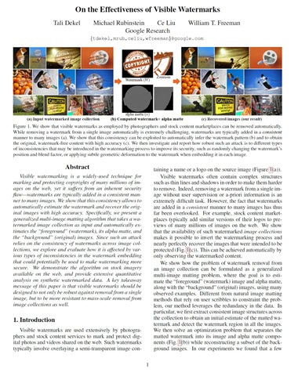

| Tali Dekel | Michael Rubinstein | Ce Liu |
| Google Research |
 |
| We show that visible watermarks as employed by photographers and stock content marketplaces can be removed automatically. While removing a watermark from a single image automatically is extremely challenging, watermarks are typically added in a consistent manner to many images (a). We show that this consistency can be exploited to automatically infer the watermark pattern (b) and to obtain the original, watermark-free content with high accuracy (c). We then investigate and report how robust such an attack is to different types of inconsistencies that may be introduced in the watermarking process to improve its security, such as randomly changing the watermark's position and blend factor, or applying subtle geometric deformation to the watermark when embedding it in each image. |
Abstract
Visible watermarking is a widely-used technique for marking and protecting copyrights of many millions of images on the web, yet it suffers from an inherent security flaw--watermarks are typically added in a consistent manner to many images. We show that this consistency allows to automatically estimate the watermark and recover the original images with high accuracy. Specifically, we present a generalized multi-image matting algorithm that takes a watermarked image collection as input and automatically estimates the "foreground" (watermark), its alpha matte, and the "background" (original) images. Since such an attack relies on the consistency of watermarks across image collection, we explore and evaluate how it is affected by various types of inconsistencies in the watermark embedding that could potentially be used to make watermarking more secured. We demonstrate the algorithm on stock imagery available on the web, and provide extensive quantitative analysis on synthetic watermarked data. A key takeaway message of this paper is that visible watermarks should be designed to not only be robust against removal from a single image, but to be more resistant to mass-scale removal from image collections as well.
Paper
|  | "On The Effectiveness Of Visible Watermarks", |
Supplementary Material
Additional results for watermark removal and the affect of random watermark variations on the removal attack. [Link] |
Google Research Blog
 |
Press
 |
Last updated: Aug 2017